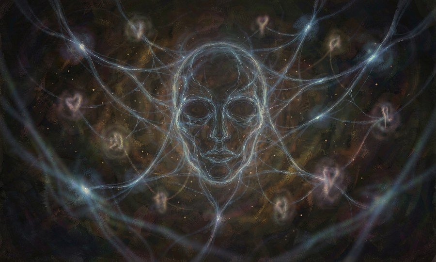

直接干涉目标的精神和情绪，包括恐惧、喜悦、语言控制等。
轻声
以几乎不可闻的声音对单一目标传达一句简短的话语，对方会在无意识中接收并遵循这条指令。
维持一句话即刻生效。
进阶路径 · 7→0 阶
7阶获得低声耳语让对方产生好感的能力。
6阶获得让人忽略耳边细微声音的能力。
5阶获得使声音穿越嘈杂环境直入目标脑海的能力。
4阶获得对多人同时低语不同指令的能力。
3阶获得将话语埋藏在目标的梦境中次日清晨唤醒的能力。
2阶获得用无声之语扰乱敌方阵型的能力。
1阶获得让风吹草动皆成传音之术的能力。
0阶获得使整个世界都回荡着你的轻语的能力。
缄言
彻底剥夺目标的表达能力。中招者在一段时间内无法发出任何有意义的音节，无法书写，甚至无法做出清晰的手势表达，仿佛被无形的丝线封口。
维持一次使用可维持一次短暂对话的时间。
进阶路径 · 7→0 阶
7阶获得使一人暂时失声的能力。
6阶获得使一人在关键时刻说不出话的能力。
5阶获得同时封锁两人的能力。
4阶获得在目标发声瞬间激活缄言的能力。
3阶获得使目标无法书写或比划的能力。
2阶获得使缄言效果延续的能力。
1阶获得使记录失效的能力。
0阶获得使说谎者自动永远失去语言中枢神经的能力。
言语天国
以极高的精神消耗为代价，强制命令一个人执行一个明确的动作指令。指令越具体、越清晰，成功率越高。
维持一次指令即刻生效，持续直至指令完成。
进阶路径 · 7→0 阶
7阶获得对意志薄弱者下达简单指令的能力。
6阶获得对意志正常者下达短暂命令的能力。
5阶获得在指令中添加方向或对象的能力。
4阶获得对两人同时下达指令的能力。
3阶获得在指令中加入条件的能力。
2阶获得对执契者下达指令的能力。
1阶获得以巨大代价让多人服从的能力。
0阶获得只需低语即可使听到者改变方向的能力。
心灵共振
通过精神链接与目标进行无声心灵沟通，这种传递无法被缄言、静音等封口能力打断或拦截。
维持连接持续至使用者主动断开。
进阶路径 · 7→0 阶
7阶获得将简单信息放入他人意识的能力。
6阶获得感知对方是否接收信息的能力。
5阶获得传递情绪的能力。
4阶获得建立多人连接的能力。
3阶获得穿透简短障碍的能力。
2阶获得通过共振判断谎言的能力。
1阶获得感受对方感官细节的能力。
0阶获得使所想之事自然流向共振者的能力。
影中梦
通过影子潜入他人梦境，可在梦中植入情绪、想法或记忆碎片，进阶后可大幅改造梦境甚至杀死梦主。
维持停留时间与梦主人意识强度相关。
进阶路径 · 7→0 阶
7阶获得进入他人梦境观察的能力。
6阶获得在梦中留下模糊暗示或情绪的能力。
5阶获得改造梦境一小部分走向的能力。
4阶获得大幅改造梦境场景或事件的能力。
3阶获得在梦中植入记忆碎片的能力，使对方醒来后对此留有残响。
2阶获得在梦中与梦主对话并影响其当前行为的能力。
1阶获得主动隐藏于梦中、无法被梦主察觉的能力。
0阶获得成为梦中之主的能力，可以自由改造梦境场景、规则，甚至可以在梦中杀死梦主。
绘色
可以粉刷他人的情绪，不同的颜色代表不同情绪，可以操控他人的情绪。
维持颜色可短暂留存，高阶可印于物品上。
进阶路径 · 7→0 阶
7阶获得看见他人情绪颜色的能力。
6阶获得分辨相似情绪颜色的能力。
5阶获得将情绪颜色画在纸上的能力。
4阶获得将情绪色彩转移到他人身上、短暂影响其情绪的能力。
3阶获得隐藏自身情绪颜色的能力。
2阶获得通过色彩判断谎言的能力。
1阶获得画出"未发生的情绪"，为他人预置一种情绪的能力。
0阶获得以色彩改写灵魂底色的能力——可随心为他人涂抹、抹除或重绘情绪。
灵徙
专精于占据死者躯体并继承其契约——将自身意识剥离，注入一具刚死亡的躯体以占据其身体继续活动。代价是原有记忆会严重流失——越久远的记忆残留越多，最近的经历与重要人际关系可能完全遗忘。若死者拥有契约魔法能力，新宿主可继承该能力，但需要时间适应另一副身体的肌肉记忆和生理特征。
维持直至意识主动离开或原躯体再次死亡。
进阶路径 · 7→0 阶
7阶获得将自身意识短暂附身于濒死生物的初步能力。
6阶获得在目标死亡瞬间立即完成意识转移的能力，成功率约一半。
5阶获得保留七成以上记忆的转移效果，且能稳定控制陌生的身体。
4阶获得读取死者生前最后十分钟记忆片段的能力，用于获取情报。
3阶获得强行抽取死者已有契约魔法并在自己身上短暂激活的技巧，但有反噬风险。
2阶获得连续两次转移的可能性——第一具身体损毁前切换到第二具备用尸体。
1阶获得精确筛选可转移的受体条件：排除疾病、残疾、衰老等缺陷，只选择健康完好的年轻躯体。
0阶获得跨越生死界限的终极形态——不再局限于"已死之人"，可将意识投射至任意生物体内取代其自我意识，被附体者的灵魂将被彻底吞噬并永久消亡。
无面
佩戴具有不同属性的面具赋予特殊的战斗或辅助状态。阶级越高，可解锁的面具种类越多，可同时融合的效果也越丰富。
维持持续佩戴即生效，摘下后效果消失。
进阶路径 · 7→0 阶
7阶获得平静之面（减伤）和愤怒之面（攻击力加成）的能力。
6阶获得抑制恐惧反应的能力。
5阶获得痛觉模糊的能力。
4阶获得真言面（看破伪装）和恐惧面（震慑敌人）的能力。
3阶获得进入危险环境不惊疑的能力。
2阶获得影响他人平静的能力。
1阶获得长期无负面情绪的能力。
0阶获得面具与表情合一，可自由切换万千众生相的能力。